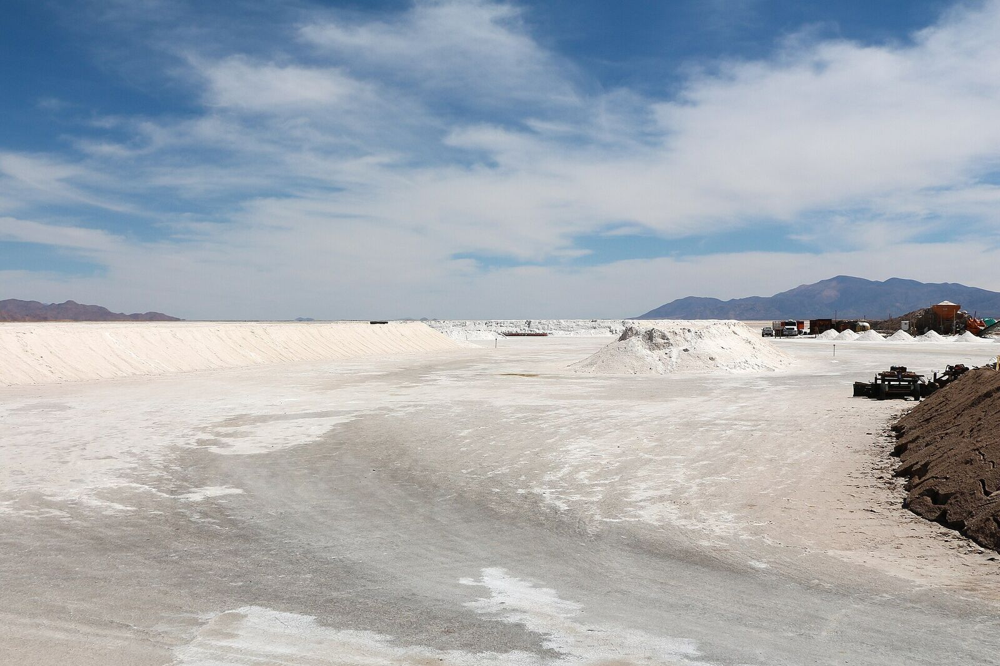

A Hotel Built by Its Own Neighbours: The Quiet Progress of Jujuy's Puna Villages
Community-built lodging, satellite internet at 3,700 metres, greenhouses beside the salt flats and record mining employment: in the villages around the salars, the lithium era is starting to translate into everyday wellbeing.

Huáncar is a village of about 430 people in the Susques department of Jujuy, on the high plateau that holds some of Argentina's largest lithium operations. Its newest building is a tourist hotel completed in 2023 — built by workers from the village, with materials from the zone, furnished by local artisans and powered in part by solar panels. The project was backed by lithium producer Allkem, whose Olaroz operation sits nearby, but the hands that raised it were Huáncar's own.
The hotel is a small story that stands for a larger one. Public debate about lithium in the puna usually revolves around water and environmental control — a debate that remains open and active in Jujuy's legislature. But alongside it, a quieter accumulation of concrete changes is reshaping daily life in the villages closest to the salars: jobs, connectivity, roads, classrooms and new local businesses.
Employment is the most visible change. Lithium Argentina, operator of the Caucharí-Olaroz project, signed agreements with the surrounding communities and by 2023 had hired roughly 20% of its workforce locally, alongside programmes to develop local suppliers. Provincial authorities said in May 2026 that mining now sustains around 10,000 direct and indirect jobs in Jujuy, including exploration work.
Internet, roads and classrooms
In Lipán, a small herding community on the road to the salars, every family now has an internet connection after developer Lition Energy installed satellite service and donated computers. The company also brought in Ticmas, a digital education platform, to help close the connectivity gap for the village school, and partnered with Fundación Cimientos on scholarships that accompanied 25 Jujuy students through 2024.
Infrastructure has followed. Working with the provincial government, the same company helped restore Provincial Route 79, one of the roads that stitch the puna's villages to the highway that carries lithium out and everything else in.
Small enterprise is the next layer. Through Fundación Minka, training programmes support local entrepreneurs and small suppliers hoping to sell goods and services to the mining camps — and a group of local women artisans has received support to develop their traditional spinning work into a business.
Greenhouses beside the salt flats
Some of the most valued projects are the least industrial. Allkem's 'Mi Huella Verde' programme built greenhouses and henhouses with families and schools in Huáncar and Susques — an investment of roughly US$17,700 in 2023 that means fresh vegetables and eggs in villages where almost nothing grows outdoors at 3,700 metres.
The province's lithium royalties have grown in step: from about 200 million pesos collected in 2020 to some 23 billion in 2024. By law, 35% of that flows to a development fund for the Quebrada and Puna regions and 10% to the head municipalities of the mining departments — though how transparently those funds reach the villages is now itself a matter of legislative debate, a sign of a maturing conversation.
None of this settles the larger questions the puna's communities keep asking about water and consultation. But a resident of Susques, asked what the mines had changed, listed the answers that matter at ground level: work, investment — and, at last, mobile phone service. In the lithium business they call it social licence. In Huáncar it looks like a hotel the village built itself.